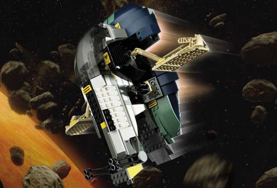

 |
LEGO® Star Wars™Jango Fett’s Slave I™Numéro du poste : 7153 |
|
Fuyant Obi-Wan Kenobi, Jango Fett et son jeune fils Boba Fett pénètrent volontairement dans un champ d’astéroïdes pour s’y cacher et attaquer par surprise Obi-Wan Kenobi. Le Slave I est équipé de tout le nécessaire pour éviter les énormes pierres qui s’approchent de trop près, avec ses deux canons lasers rotatifs, son cockpit pivotant et ses ailes. Il dispose également d’un compartiment prison démontable. C’est un navire spatial conçu pour survivre à de nombreuses aventures. Comprend les figurines de Jango Fett et de Boba Fett. |
|
© 2002 The LEGO Group.
© 2002 Lucasfilm Ltd. & TM. All rights reserved. Used under authorization.